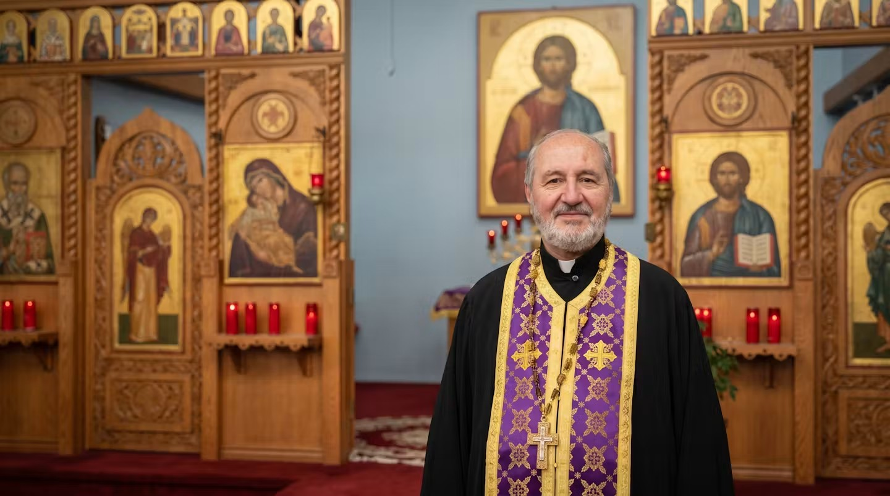

Christ is in our midst! · المسيح بيننا
An Antiochian Orthodox community in Arvada — rooted in the ancient Church, gathered from many nations, and worshipping in English and Arabic. Whoever you are, you are welcome here.

Saint Elias is an Eastern Orthodox parish in Arvada, Colorado — a spiritual home for families and seekers drawn to the beauty, depth, and stability of the ancient Christian faith.
We belong to the Antiochian Orthodox Christian Archdiocese of North America, part of the historic Church of Antioch — the city where, as the Scriptures record, the followers of Jesus were first called Christians. Ours is a Middle-Eastern and Arabic Orthodox tradition carried to Colorado by immigrant families, and today it gathers people of every background around the same altar.
Because our community spans generations and continents, we worship in both English and Arabic, so that the young and the old, the newcomer and the faithful of many years, can each pray in the words closest to their heart. Whatever brought you here — inheritance, curiosity, or a long search — there is a place for you. Come and see.

Our Pastor
Fr. George serves as pastor of Saint Elias, shepherding our parish in worship, teaching, and the care of souls. He presides at the Divine Liturgy and the sacraments, guides those preparing to become Orthodox, and walks with our families through every season of life — baptisms and weddings, illness and grief, ordinary Sundays and the great feasts of the Church.
He counts it a joy to meet visitors and to answer the questions of anyone exploring the faith. If you would like to talk, to visit, or simply to learn more, Fr. George would be glad to welcome you.
Placeholder biography — to be replaced with Father's own words before launch.
Our parish is named for the holy Prophet Elias — Elijah — the zealous man of God who stood before kings, called down fire from heaven on Mount Carmel, and was taken up in a fiery chariot. In the Orthodox Church he is honored as a model of prayer, courage, and unwavering faithfulness to the one true God. We ask his intercessions as we seek to bear that same faith in our own time and city.
Saint Elias is part of the Antiochian Orthodox Christian Archdiocese of North America, under the ancient Patriarchate of Antioch — one of the historic centers of Christianity, tracing its life in unbroken continuity to the apostles Peter and Paul. What you find here on a Sunday morning is not a new invention but the worship of the undivided Church: the same Scriptures, the same sacraments, the same faith handed down for two thousand years.
We are a parish shaped by our Arabic-speaking heritage and open to all who come. Our services are offered in English and Arabic, and our common life reflects the warmth of Middle-Eastern hospitality — shared meals, strong friendships, and a table where the stranger quickly becomes family. المسيح بيننا — Christ is in our midst.
You do not need to be Orthodox, or Arabic-speaking, or to know when to stand or sit, to belong here. Cradle Orthodox and lifelong seekers, families with restless children and those who arrive alone — all are welcome to pray with us, to ask questions, and to stay for coffee afterward. The only thing we ask is that you come and see.
What We Believe · What You'll Find
A few threads that run through everything we do at Saint Elias.
The unchanged faith of the apostles and the early Church — the same Scriptures, creed, and sacraments held by Christians for two thousand years.
At the heart of our week is the Eucharist — heaven meeting earth in prayer, incense, and the Body and Blood of Christ, offered in English and Arabic.
Icons, chant, and beauty are not decoration but prayer made visible — drawing the whole person, body and soul, toward the presence of God.
Grandparents and toddlers, old friends and first-time visitors — a warm, hospitable community where no one worships alone.
Come and See
The best way to know Saint Elias is to join us for worship. Plan your first visit, or take a look at our weekly and seasonal service schedule.